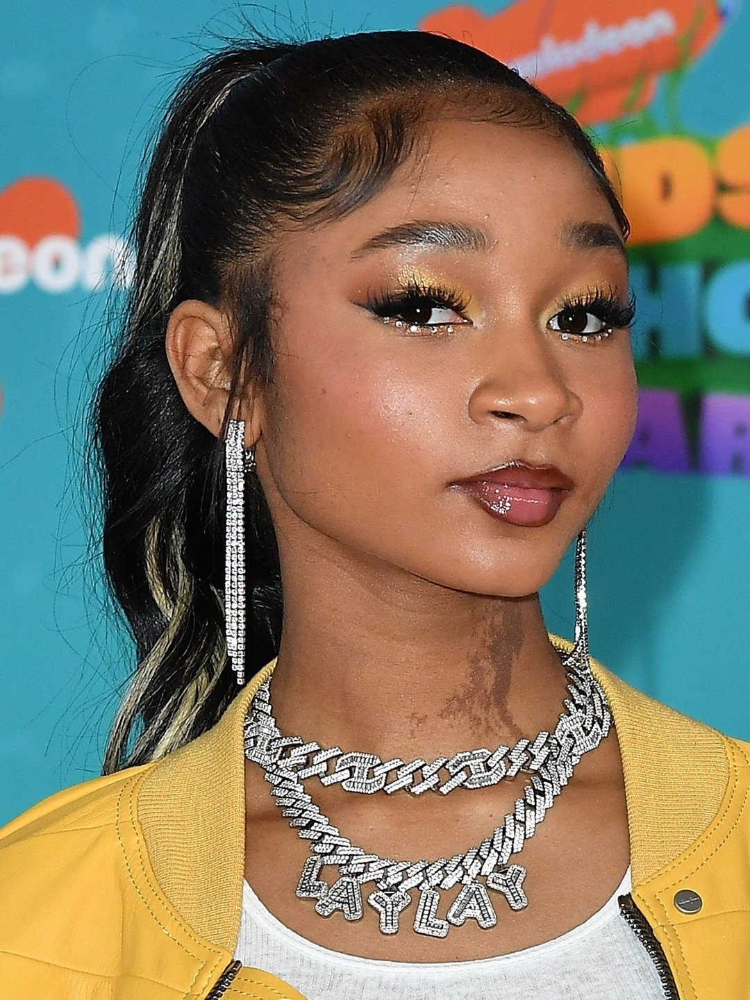
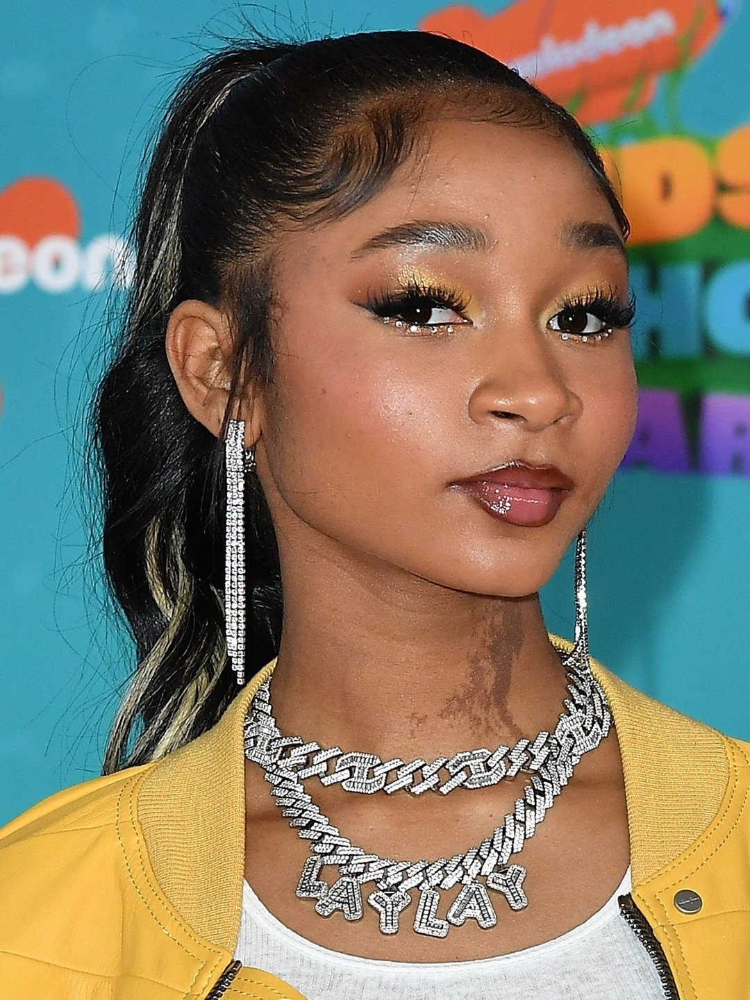
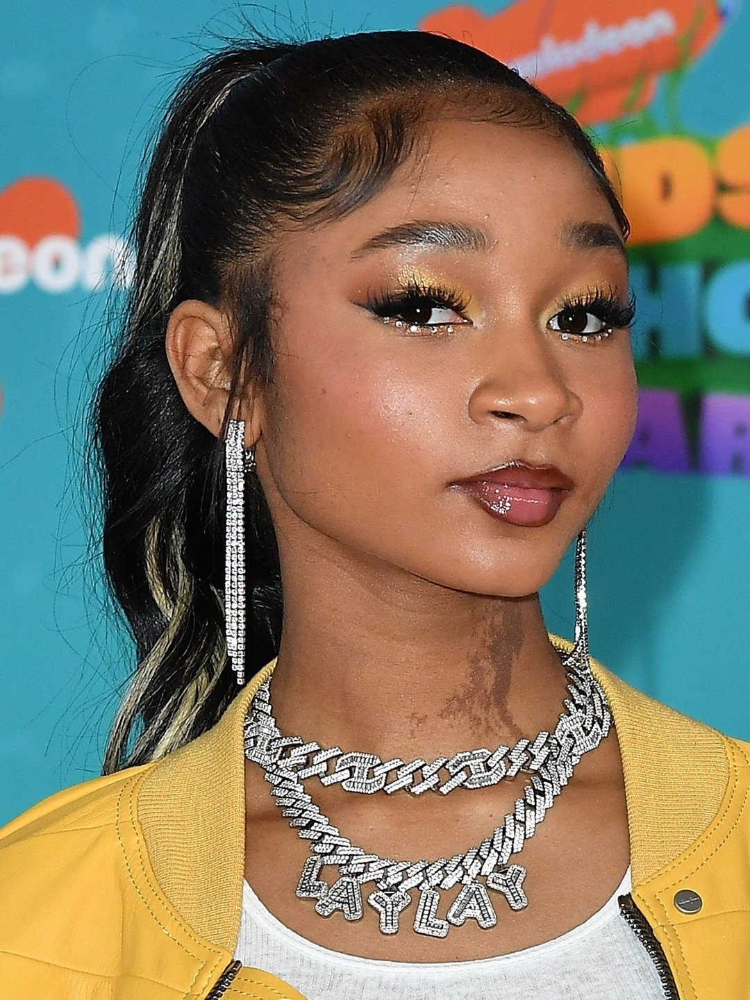

Gallery
Check out some of my favorite moments captured in photos:

 

My name is Keshy.Am a student at the Kabarak University majoring in computer science and minoring in wed development. Am a self tought web developer with a passion for crearting beautiful and functional websites. I have experience in HTML, CSS, and JavaScript, and I am always looking to learn new skills and improve my craft. Am a big laylay fan and I love to listen to her music while I work. laylay is an amazing artist and her music inspires me to be creative and think outside the box.And the young artist is a great role model for young people like me.It shows that no matter how old you are age is just a number when it comes to chasing onesdreams and goals
Laylay is a talented young artist who has taken the music world by storm. With her unique sound and powerful lyrics, she has captured the hearts of fans around the globe. Laylay's music is a reflection of her life experiences, and she uses her platform to inspire others to chase their dreams and never give up. Despite her young age, Laylay has already achieved so much in her career. She has released several hit singles and has collaborated with some of the biggest names in the industry. Her passion for music and dedication to her craft is evident in everything she does. She is a true role model for young people everywhere, showing them that with hard work and determination, anything is possible. Laylay's music is not just entertainment; it is a message of hope and empowerment for the next generation. As she continues to rise to fame, Laylay remains grounded and true to herself. She is a shining example of what it means to be an artist in today's world, and her impact on the music industry will be felt for years to come. My favorite song by Laylay is " Do what i want." This song is a perfect blend of catchy melodies and meaningful lyrics. It speaks to the struggles and triumphs of life, and I can relate to it on so many levels. Whenever I listen to "Alaya High," I feel motivated and inspired to keep pushing forward, no matter what challenges come my way.
As a web developer, I offer a range of services to help businesses and individuals establish a strong online presence. My services include:
If you're interested in working with me or have any questions, feel free to reach out!
Laylay's music is a blend of various genres, including pop, R&B, and hip-hop. Her unique sound sets her apart from other artists in the industry. Some of her most popular songs include:
Each song tells a story and resonates with listeners on a personal level. Laylay's music is not just about entertainment; it's about connection and empowerment.
Check out some of my favorite moments captured in photos:
